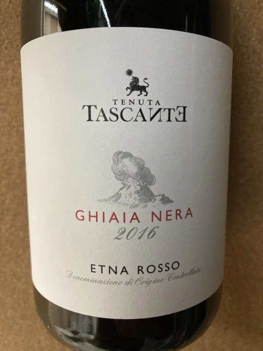
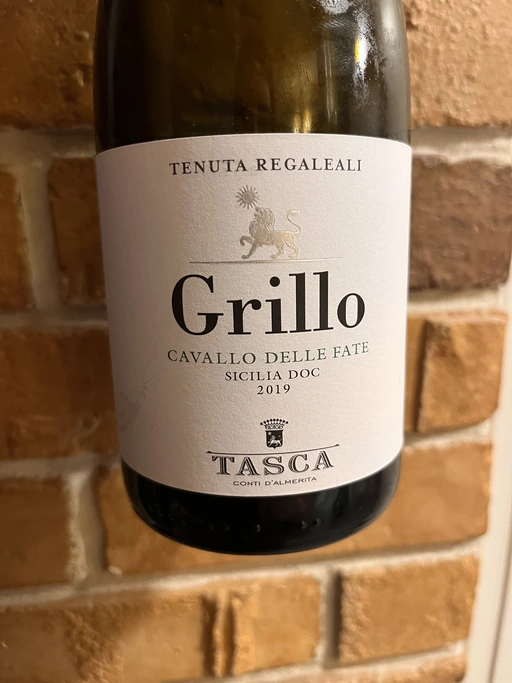
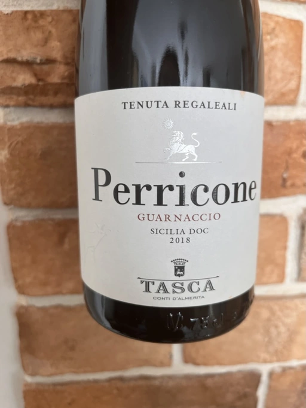
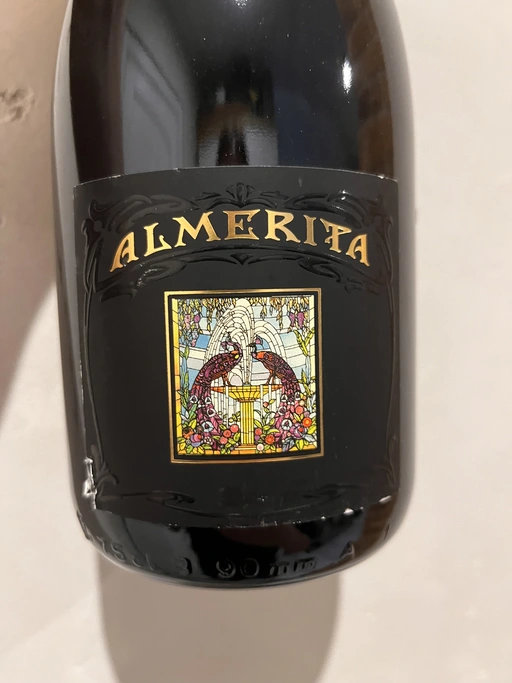
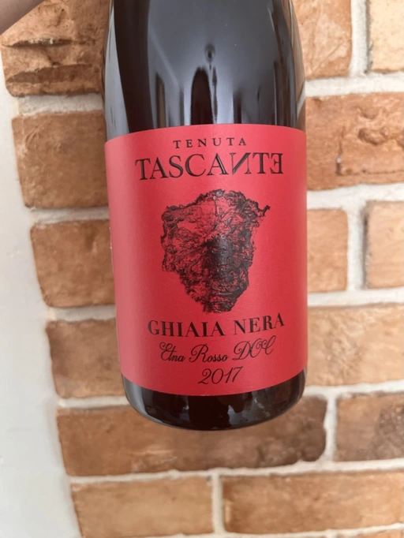
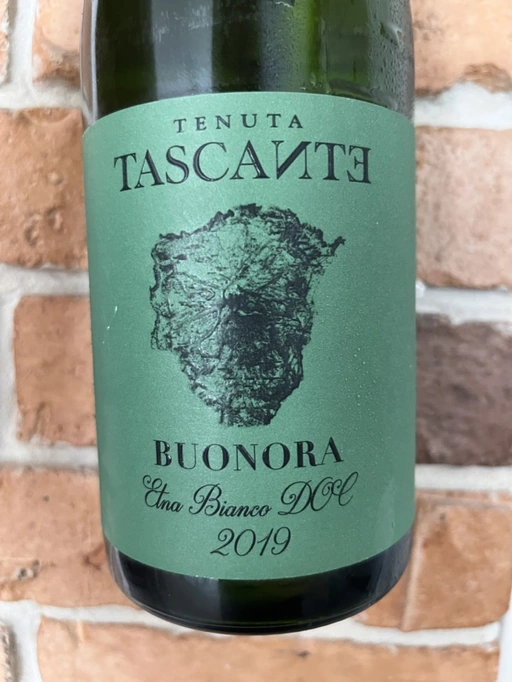
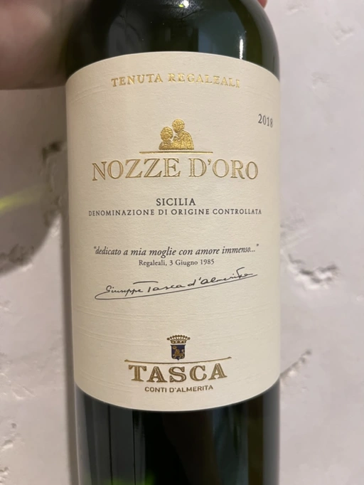

- Type
- Red Still, Dry
- Producer
- Tasca
- Vintage
- 2017
- Location
- Italy, Sicilia DOC
- Grapes
- Nero d’Avola
- Alcohol
- 13
- Sugar
- 0.1
- Price
- 345 UAH
- Cellar
- N/A
Producer
Wine producer from Sicilia, Italy. They cultivate grapes in the vineyards of 5 different estates:
- Tenuta Regaleali
- Tenuta Capofaro
- Tenuta Tascante
- Fondazione Whitaker
- Tenuta Sallier de La Tour
Ratings
2020-08-11 - 5.50
Dinner wine. Too sweet, lacks body and character. But fine otherwise.
Related

Tasca
Tenuta Tascante Ghiaia Nera - 2016

Tasca
Tenuta Regaleali Grillo Cavallo Delle Fate - 2019

Tasca
Tenuta Regaleali Perricone Guarnaccio - 2018

Tasca
Tenuta Regaleali Almerita Metodo Classico Brut - 2017

Tasca
Tenuta Tascante Ghiaia Nera - 2017

Tasca
Tenuta Tascante Buonora - 2019

Tasca
Tenuta Regaleali Nozze d'Oro - 2018